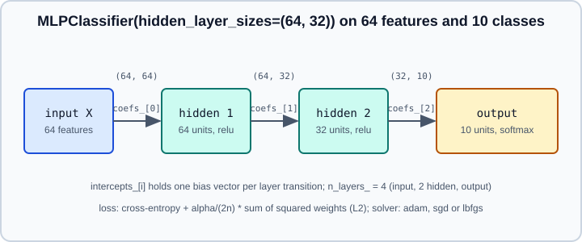

Neural Networks: MLPClassifier & MLPRegressor
|
This content was generated with the assistance of AI and should be verified against the official documentation before being relied on in production. |
scikit-learn ships a small neural network module, sklearn.neural_network, with three estimators: MLPClassifier, MLPRegressor and the unsupervised feature learner BernoulliRBM. They follow the usual estimator API (see The scikit-learn Estimator API), so they plug into pipelines, cross-validation and grid search unchanged. This page explains what they compute, every option that matters, and where they stop being the right tool. The neural network theory itself (neurons, layers, activations) is in Neural Network Fundamentals and the training algorithm in Backpropagation & Automatic Differentiation; here only the scikit-learn specifics are covered.
PyTorch 2.15 and Keras 3.15 on TensorFlow 2.21 are mentioned only as the place to go next. Examples were run on Python 3.13 with scikit-learn 1.9.1 on 2026-10-31; the numbers quoted come from that run and can differ slightly on other versions, platforms and random states.
What an MLP computes
A multi-layer perceptron (MLP) is a stack of fully connected layers. With input \(x\), hidden layer \(h = g(W_1 x + b_1)\) and output \(\hat{y} = f(W_2 h + b_2)\), where \(g\) is the hidden activation and \(f\) the output activation. The shapes of the weight matrices are stored after fitting in coefs_ (a list with one array per layer transition, shape (n_in, n_out)) and the biases in intercepts_.

What the estimator fixes for you, and what you choose:
-
The output layer and loss are chosen automatically.
MLPClassifierminimises cross-entropy: a softmax output for multiclass, a logistic (sigmoid) output for binary, and independent logistic outputs for multilabel targets (an indicator matrix).MLPRegressorminimises squared error with an identity output, and accepts a multi-output target of shape(n_samples, n_targets). There is no way to pick another loss. -
You choose the hidden layers with
hidden_layer_sizes, the hiddenactivation, thesolver, the L2 penaltyalpha, the learning-rate schedule, and the stopping rules.
The L2 penalty added to the loss is \(\frac{\alpha}{2n}\lVert W\rVert_2^2\) summed over the weight matrices (not the biases), where \(n\) is the number of samples in the batch. This is the only built-in regulariser: there is no dropout, no batch normalisation, no weight decay decoupled from the loss, and no custom layers.
A first complete example
Scaling is not optional. The user guide states that MLPs are sensitive to feature scaling, so put a StandardScaler in front, inside a Pipeline, so that the statistics are learned on the training data only (see Scaling & Transforming Features and Pipelines).
from sklearn.datasets import load_digits
from sklearn.model_selection import train_test_split
from sklearn.pipeline import make_pipeline
from sklearn.preprocessing import StandardScaler
from sklearn.neural_network import MLPClassifier
X, y = load_digits(return_X_y=True)
X_train, X_test, y_train, y_test = train_test_split(X, y, stratify=y, random_state=0)
clf = make_pipeline(
StandardScaler(),
MLPClassifier(
hidden_layer_sizes=(64, 32),
activation="relu",
solver="adam",
alpha=1e-3,
early_stopping=True,
validation_fraction=0.1,
n_iter_no_change=10,
max_iter=300,
random_state=0,
),
)
clf.fit(X_train, y_train)
mlp = clf[-1]
print("test accuracy:", round(clf.score(X_test, y_test), 3))
print("epochs run:", mlp.n_iter_, "best validation score:", round(mlp.best_validation_score_, 3))
print("weight shapes:", [w.shape for w in mlp.coefs_])
print("final training loss:", round(mlp.loss_, 4), "curve length:", len(mlp.loss_curve_))This printed a test accuracy of 0.956, 39 epochs run, a best validation score of 0.97, weight shapes [(64, 64), (64, 32), (32, 10)] and a final training loss of 0.0542.
Fitted attributes worth knowing
| Attribute | Meaning |
|---|---|
|
Lists of weight matrices and bias vectors, one entry per layer transition. |
|
Final training loss and the loss after each epoch. Plot |
|
Only when |
|
Epochs run, number of layers including input and output, number of outputs, and the output activation chosen (for example softmax for multiclass). |
|
Number of training samples seen by the solver. |
|
Best training loss, used by the |
Hyperparameters
| Parameter | What it does and the pitfalls |
|---|---|
|
Tuple with one integer per hidden layer, default |
|
Hidden-layer activation: |
|
|
|
L2 penalty, default |
|
Mini-batch size for |
|
For |
|
Maximum number of epochs for |
|
Reshuffle samples each epoch ( |
|
Stop when the loss (or validation score) fails to improve by at least |
|
Only for |
|
Only for |
|
Hold out a random fraction of the training data (10 percent by default) and stop when its score stops improving. For |
|
Reuse the previous solution as the initialisation of the next |
|
Seeds the weight initialisation, the shuffling and the validation split. Different initialisations can give different results because the loss is non-convex. |
|
Only for |
Choosing a solver
-
lbfgsis a full-batch quasi-Newton method. The guide says it converges faster and finds better solutions on small datasets, and it has no mini-batch or online mode. It ignores the learning-rate and batch-size options, andpartial_fitis not available. -
adamis the default and is described as robust on relatively large datasets. It supports mini-batches andpartial_fit, but may need many epochs. -
sgdsupports mini-batches, momentum and Nesterov momentum. With a well tuned learning rate and schedule it can beat the other two, at the price of more tuning. See Optimizers & Learning Rate Schedules for the general theory of these update rules.
A practical rule: use lbfgs for a few thousand samples or fewer, adam otherwise, and sgd only if you are prepared to tune it.
Regression
MLPRegressor has the identity output and squared-error loss. Scale the features and also scale the target when its magnitude is far from one; TransformedTargetRegressor does this inside the estimator so that predictions come back in the original units.
import numpy as np
from sklearn.compose import TransformedTargetRegressor
from sklearn.datasets import make_regression
from sklearn.model_selection import GridSearchCV, train_test_split
from sklearn.neural_network import MLPRegressor
from sklearn.pipeline import make_pipeline
from sklearn.preprocessing import StandardScaler
X, y = make_regression(n_samples=1500, n_features=10, n_informative=6, noise=15.0, random_state=0)
X_train, X_test, y_train, y_test = train_test_split(X, y, random_state=0)
model = TransformedTargetRegressor(
regressor=make_pipeline(
StandardScaler(),
MLPRegressor(hidden_layer_sizes=(32,), solver="lbfgs", max_iter=2000, random_state=0),
),
transformer=StandardScaler(),
)
param_grid = {"regressor__mlpregressor__alpha": 10.0 ** -np.arange(1, 5)}
grid = GridSearchCV(model, param_grid, cv=3)
grid.fit(X_train, y_train)
print("best params:", grid.best_params_)
print("test R2:", round(grid.score(X_test, y_test), 3))This selected alpha=0.1 and reached a test \(R^2\) of 0.987 on this easy synthetic problem. The nested parameter name regressor__mlpregressor__alpha is the usual double-underscore path to a step inside a pipeline inside a meta-estimator (see get_params, set_params and clone and Grid, Randomized & Halving Search).
Multilabel and multiclass targets
MLPClassifier supports multilabel classification directly: pass y as a binary indicator matrix of shape (n_samples, n_labels) and each output unit becomes an independent logistic unit. This differs from the one-vs-rest wrappers described in Voting, Stacking & Multiclass, which train separate models; here one shared hidden representation serves all labels. For multiclass targets one softmax output is used. predict_proba returns the output activations.
Incremental training: partial_fit and warm_start
partial_fit performs one pass over the batch you give it and is available for sgd and adam. On the first call MLPClassifier needs classes= because it cannot see all labels. warm_start=True with max_iter=1 is the pattern from the user guide to run fit one epoch at a time while monitoring and controlling the stopping logic yourself. See also Performance and Parallelism in scikit-learn for out-of-core strategies.
import warnings
import numpy as np
from sklearn.datasets import load_digits
from sklearn.exceptions import ConvergenceWarning
from sklearn.neural_network import MLPClassifier
from sklearn.preprocessing import StandardScaler
X, y = load_digits(return_X_y=True)
X = StandardScaler().fit_transform(X) # for brevity; fit on training data only in real code
clf = MLPClassifier(
hidden_layer_sizes=(32,),
solver="sgd",
learning_rate_init=0.05,
momentum=0.9,
nesterovs_momentum=True,
random_state=0,
)
classes = np.unique(y)
for epoch in range(20):
order = np.random.default_rng(epoch).permutation(len(X))
for batch in np.array_split(order, 10):
clf.partial_fit(X[batch], y[batch], classes=classes)
print("loss:", round(clf.loss_, 4), "train accuracy:", round(clf.score(X, y), 3))
# warm_start: one epoch per fit call
warm = MLPClassifier(hidden_layer_sizes=(32,), max_iter=1, warm_start=True, random_state=0)
with warnings.catch_warnings():
warnings.simplefilter("ignore", ConvergenceWarning) # every 1-epoch fit warns
for _ in range(5):
warm.fit(X, y)
print("warm start loss after 5 fits:", round(warm.loss_, 4))The 200 partial_fit calls gave a training loss of 0.0156 and a training accuracy of 0.998, and the five one-epoch warm_start fits reached a loss of 1.3532. The scaler here is fitted on all of the data to keep the snippet short, which is exactly the leak described in Common Pitfalls: Leakage and Randomness; do not copy that line into a real evaluation.
Convergence, overfitting and reproducibility
-
ConvergenceWarning ("Maximum iterations reached and the optimization hasn’t converged yet") means
max_iterepochs were not enough. Checkloss_curve_; raisemax_iter, scale the features, or raiselearning_rate_initslightly. Do not silence the warning without looking at the curve. -
Overfitting. A large network on a small dataset memorises it. The levers available are
alpha, fewer or narrower layers, andearly_stopping. Diagnose with Validation & Learning Curves in scikit-learn and the general discussion in Generalization & Regularization. -
Seed sensitivity. The loss is non-convex, so two runs with different
random_statecan end in different solutions. Report the mean and spread over several seeds, or cross-validate (see Cross-Validation & Splitters in scikit-learn). -
Categorical and missing values. The estimators need a numeric matrix with no missing values. Encode categoricals and impute first (see Encoding Categorical Features, Imputing Missing Values and ColumnTransformer & Heterogeneous Data).
-
Probabilities. Softmax outputs from a network are not guaranteed to be calibrated; check with Probability Calibration.
-
Sample weights.
fitandpartial_fitacceptsample_weightsince scikit-learn 1.7; earlier releases have no way to weight samples in these estimators.
Limitations stated by the guide
The user guide lists the limits of the module itself:
-
The loss is non-convex, so initialisation matters.
-
Hyperparameters (hidden size, layers, iterations,
alpha) need tuning. -
It is not intended for large-scale applications, and there is no GPU support.
-
Only the architecture "stack of dense layers" exists: no convolutions, recurrence, attention, embeddings, dropout, custom losses or custom training loops.
For those needs see From scikit-learn to Deep Learning. For tabular data, a gradient boosted model is very often a stronger default than an MLP (see Gradient Boosting & HistGradientBoosting and Tabular Data & Gradient Boosting).
BernoulliRBM: an unsupervised feature learner
BernoulliRBM is a restricted Boltzmann machine with binary visible and hidden units. It has no predict; it is a transformer: transform(X) returns the hidden-unit probabilities, which can feed a linear classifier in a pipeline. It is trained with Stochastic Maximum Likelihood (persistent contrastive divergence) on mini-batches.
-
Inputs must be in \([0, 1]\), either binary or as probabilities, for example after
MinMaxScaler. Values outside this range give meaningless results. -
Main parameters:
n_components(hidden units, default 256),learning_rate(default 0.1),batch_size(default 10),n_iter(default 10) andrandom_state. -
score_samplesreturns the pseudo-likelihood, a cheap proxy of the log-likelihood that is useful for monitoring but not an exact likelihood. -
gibbs(v)runs one Gibbs step to sample a visible vector, andcomponents_holds the weights.
from sklearn.datasets import load_digits
from sklearn.linear_model import LogisticRegression
from sklearn.model_selection import train_test_split
from sklearn.neural_network import BernoulliRBM
from sklearn.pipeline import Pipeline
from sklearn.preprocessing import MinMaxScaler
X, y = load_digits(return_X_y=True)
X = MinMaxScaler().fit_transform(X) # pixels to [0, 1]
X_train, X_test, y_train, y_test = train_test_split(X, y, stratify=y, random_state=0)
rbm = BernoulliRBM(n_components=100, learning_rate=0.06, batch_size=10, n_iter=10, random_state=0)
pipe = Pipeline([("rbm", rbm), ("logreg", LogisticRegression(max_iter=1000))])
pipe.fit(X_train, y_train)
baseline = LogisticRegression(max_iter=1000).fit(X_train, y_train)
print("raw pixels:", round(baseline.score(X_test, y_test), 3))
print("RBM features:", round(pipe.score(X_test, y_test), 3))
print("mean pseudo-likelihood on test:", round(rbm.score_samples(X_test).mean(), 2))With these settings, the RBM features scored 0.838 against 0.969 for logistic regression on the raw pixels, so the RBM did not help here. That is an honest result, not a bug: the RBM needs learning_rate, n_components and n_iter tuned (for example by grid search over the whole pipeline), and on a problem like this one a plain linear model on pixels is already strong. RBMs are of historical and didactic interest; modern representation learning uses deep autoencoders or pre-trained encoders (see Embeddings & Representation Learning).
Where this module fits
Use MLPClassifier and MLPRegressor for a quick non-linear baseline on small, scaled, numeric data, for teaching, or when you must stay inside scikit-learn pipelines. Compare it against Support Vector Machines in scikit-learn with an RBF kernel, Kernel Ridge, Kernel Approximation & Nyström and gradient boosting. When you need GPUs, images, text, sequences, custom losses or production-grade training loops, move to PyTorch (nn.Module) or Keras (Keras Overview); the decision guide is Choosing a Framework.